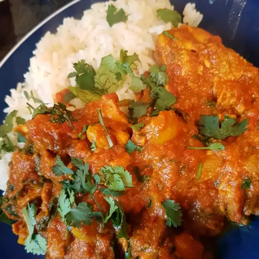

Chicken Jalfrezi

Description
This is a Pakistani recipe that is a spicy curry. My Mama made this dish, and I like it very much. You must try it. This dish is best served with basmati rice, chapattis or naan bread.
Ingredients
- 2 tablespoons vegetable oil
- 1 onion, grated
- 2 cloves garlic, chopped
- 1 ½ pounds boneless skinless chicken thighs, cut in half
- 3 teaspoons ground turmeric
- 1 teaspoon chili powder
- 1 ½ teaspoons salt
- 1 (14.5 ounce) can peeled and diced tomatoes
- 2 tablespoons ghee (clarified butter)
- 3 teaspoons ground cumin
- 3 teaspoons ground coriander
- 2 tablespoons grated fresh ginger root
- ½ cup chopped cilantro leaves
Steps
- Heat the oil in a large deep skillet over medium-high heat. Add onions and garlic, and cook for about 2 minutes. Add the chicken, and season with turmeric, chili powder and salt. Fry gently, scraping the bottom of the pan frequently and turning the chicken.
- Pour in the tomatoes with their juice, cover the pan, and simmer over medium heat for 20 minutes. Uncover, and simmer for another 10 minutes to let the excess liquid evaporate.
- Add the ghee, cumin, ground coriander, ginger and cilantro, and simmer for another 5 to 7 minutes. Serve the chicken pieces with sauce spooned over the top.